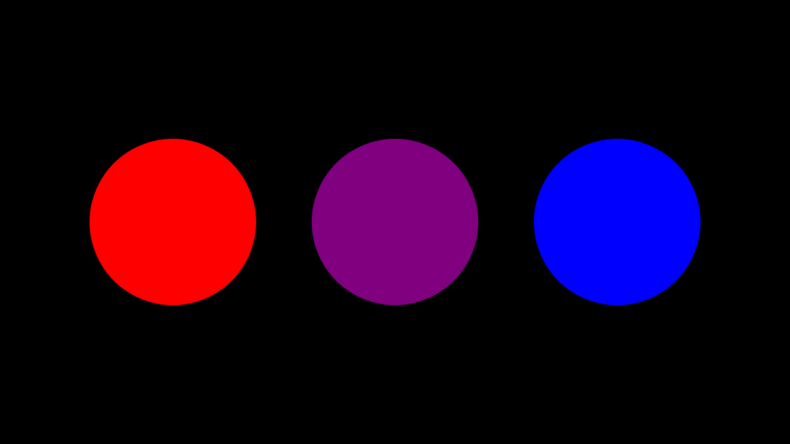
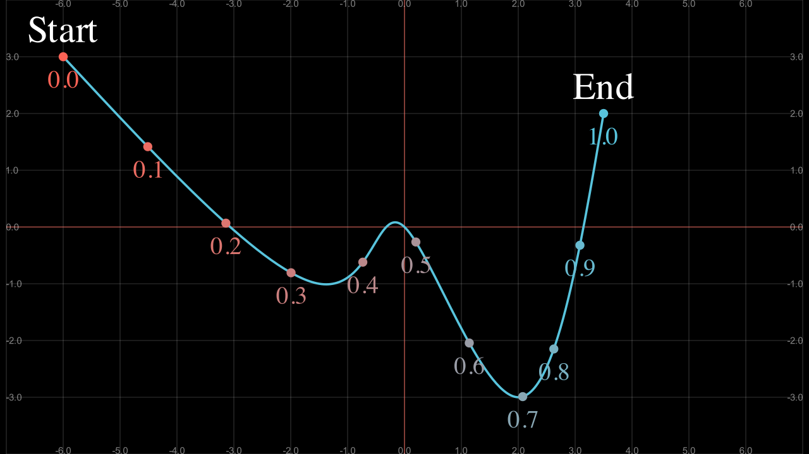
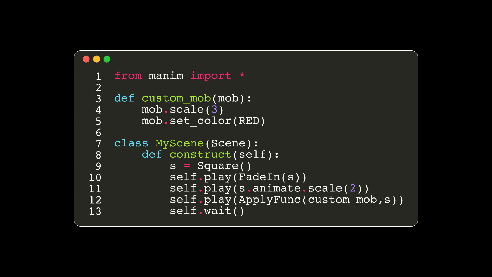

Manim utilities¶
In this chapter we will learn some methods and classes that are quite useful to make our animations, here we will conclude all the class animations.
Helpful methods¶
.interpolate_color¶
As its name implies, it gives you an interpolation between two colors, you can see the official documentation to see its definition and the algorithm, You can see in the same documentation other functions related to color in case you want to learn more.
def construct(self):
dots = VGroup(*[Dot() for _ in range(3)])\
.set(width=3).arrange(RIGHT,buff=1)
left_dot, center_dot, right_dot = dots
color1 = "#FF0000"; color2 = "#0000FF"
color3 = interpolate_color(color1,color2,0.5)
# |
# v
# 0 <= alpha <= 1
# color1 color2
print([color1,color2,color3])
# ['#FF0000' '#0000FF' <Color #7f007f>]
left_dot.set_color(color1)
right_dot.set_color(color2)
center_dot.set_color(color3)
self.add(dots)
Show result
.set_points¶
Note
For this section we are going to use the grid that you created in previous chapters, and it will help us to understand this method.
_as_corners¶
The way to make a polyline using the coordinates of the screen we can do the following:
def construct(self):
sg = ScreenGrid() # Here is your Grid
sg.fade(0.5)
def coord(x,y):
return np.array([x,y,0])
points = [
coord(x,y)
for x,y in [
(-6,3),
(-1.5,-1),
(0,0),
(2,-3),
(3.5,2)
]
]
dots = VGroup(*[Dot(p) for p in points])
polyline = VMobject(color=BLUE).set_points_as_corners(points)
self.add(sg,polyline,dots)
Show result
_smoothly¶
def construct(self):
sg = ScreenGrid() # Here is your Grid
sg.fade(0.5)
def coord(x,y):
return np.array([x,y,0])
points = [
coord(x,y)
for x,y in [
(-6,3),
(-1.5,-1),
(0,0),
(2,-3),
(3.5,2)
]
]
dots = VGroup(*[Dot(p) for p in points])
polyline = VMobject(color=BLUE).set_points_smoothly(points)
self.add(sg,polyline,dots)
Show result

.point_from_proportion¶
This is an exclusive method for VMobjects, especially for paths (lines and curves).
Think VMobject (a curve) as a road, as you travel the road you can tell the percentage you have completed. Using this analogy with curves (paths) you can locate a point in a percentage of the path using point_from_proportion.
def construct(self):
path = Line(LEFT,RIGHT) # We will study this below.
path.width = config.frame_width - 2
proportions = np.arange(0,1.1,0.1)
# 0.1, 0.2, 0.3 ... 1.0
prop_text = VGroup(*[
VGroup(
# The first argument to dot is the
# coordinate where it is located,
# so we don't need to use ".move_to"
# in this case.
Dot(path.point_from_proportion(p)),
Text("%.1f"%p,height=0.3).next_to(path.point_from_proportion(p),DOWN),
).set_color(interpolate_color(RED,BLUE,p))
for p in proportions
])
start = Text("Start").next_to(path.get_start(),UP)
end = Text("End").next_to(path.get_end(),UP)
self.add(path,prop_text,start,end)
Show result
With regular figures it is easy to see what this method means.
def construct(self):
paths = VGroup(
Line(LEFT,RIGHT), # We will study this below.
Square(),
Circle()
).arrange(RIGHT,buff=0.5)\
.set(width=config.frame_width-2)
def get_proportions(path,proportions=np.arange(0,1.1,0.1)):
return VGroup(*[
Dot(
# The first argument to dot is the
# coordinate where it is located,
# so we don't need to use ".move_to"
# in this case.
path.point_from_proportion(p),
fill_opacity=1-p+0.3,
color=interpolate_color(RED,BLUE,p)
)
for p in proportions
])
def get_start_and_end(path):
return VGroup(
Text("START").next_to(path.get_start(),UP),
Text("END").next_to(path.get_end(),DOWN),
)
vgrp_proportions = VGroup(*[
get_proportions(path)
for path in paths
])
vgrp_start_end = VGroup(*[
get_start_and_end(path)
for path in paths
])
self.add(paths,vgrp_proportions,vgrp_start_end)
Show result

This counts for any VMobject.
def construct(self):
sg = ScreenGrid() # Here is your Grid
sg.fade(0.5)
proportions = np.arange(0,1.1,0.1)
# 0.1, 0.2, 0.3 ... 1.0
def coord(x,y):
return np.array([x,y,0])
points = [
coord(x,y)
for x,y in [
(-6,3),
(-1.5,-1),
(0,0),
(2,-3),
(3.5,2)
]
]
polyline = VMobject(color=BLUE).set_points_smoothly(points)
prop_text = VGroup(*[
VGroup(
# The first argument to dot is the
# coordinate where it is located,
# so we don't need to use ".move_to"
# in this case.
Dot(polyline.point_from_proportion(p)),
Text("%.1f"%p,height=0.3)
.next_to(polyline.point_from_proportion(p),DOWN),
).set_color(interpolate_color(RED,BLUE,p))
for p in proportions
])
start = Text("Start").next_to(polyline.get_start(),UP)
end = Text("End").next_to(polyline.get_end(),UP)
Show result
.get_subcurve¶
Using the concept of point_from_proportion, we can get a part of a VMobject by specifying the starting and ending percentage:
def construct(self):
def coord(x,y):
return np.array([x,y,0])
points = [
coord(x,y)
for x,y in [
(-6,3),
(-1.5,-1),
(0,0),
(2,-3),
(3.5,2)
]
]
path = VMobject(color=BLUE).set_points_smoothly(points)
partial_path = path.get_subcurve(0.1,0.9)
partial_path.set_style(stroke_width=10,stroke_color=RED)
self.add(path,partial_path)
Show result

.set_color_by_tex¶
In the Tex section we saw that there is an argument that allows us to color certain text, but sometimes we need to color certain parts afterwards, for this we use this method. However, to achieve this effectively we have to isolate the text as we saw it in TransformMatchingTex.
def construct(self):
equation = MathTex(
r"e^x = x^0 + x^1 + \frac{1}{2} x^2 + \frac{1}{6} x^3 + \cdots + \frac{1}{n!} x^n + \cdots",
)
# FAIL
equation.set_color_by_tex("+", YELLOW)
equation.set_color_by_tex("x", BLUE)
equation.width = config.frame_width - 1
self.add(equation)
Show result
Succesull coloring:
def construct(self):
equation = MathTex(
r"e^x = x^0 + x^1 + \frac{1}{2} x^2 + \frac{1}{6} x^3 + \cdots + \frac{1}{n!} x^n + \cdots",
substrings_to_isolate=["x","+"]
)
equation.set_color_by_tex("+", YELLOW)
equation.set_color_by_tex("x", BLUE)
equation.width = config.frame_width - 1
self.add(equation)
Show result

We could have done this using tex_to_color_map in MathTex instance, but sometimes you will want to color certain parts in different parts of the code, and in this way it can be achieved. But remember that if your formulas are too complex then they will not work.
.save_state and Restore¶
This is a very simple method, basically it is about creating a temporary copy in a time state of a Mobject, and after applying certain modifications to it, using Restore we can return to the point where we saved the state.
def construct(self):
FRAME_WIDTH = config.frame_width
text = Tex("Original")\
.set(width=FRAME_WIDTH/2)
text.save_state()
text_2 = Tex("Modified")\
.set(width=FRAME_WIDTH/1.5)\
.set_color(ORANGE)\
.to_corner(DL)
self.add(text)
self.play(Transform(text,text_2))
self.play(
text.animate.shift(RIGHT).rotate(PI/4)
)
self.play(Restore(text))
self.wait(0.7)
Show result
.surround¶
This method allows us to fit a Mobject in another, this method will be useful when we use indication animations.
def construct(self):
formula = MathTex("x","=","y","+","3").scale(4)
sm1 = Circle().surround(formula[0]) # buffer_factor=1.2) by default
sm2 = Circle().surround(formula[1],buffer_factor=1)
sm3 = Rectangle(color=TEAL).surround(formula[2])
sm4 = Rectangle(color=YELLOW).surround(formula[2],stretch=True) # To fix the ratio
self.add(
formula,
sm1,sm2,sm3,sm4
)
Show result

.add_background_rectangle¶
It is similar to surround, with the difference that this method adds the background to the Mobject.
def construct(self):
number_plane = NumberPlane(axis_config={"include_numbers": True})
matrix = VGroup(*[Text(f"{i}") for i in range(27)])\
.arrange_in_grid(cols=6,buff=1)
_0 = matrix[0]
_16 = matrix[16]
_13 = matrix[13]
_16.add_background_rectangle()
_0.add_background_rectangle(color=RED)
_13.add_background_rectangle(color=YELLOW,buff=0.2)
self.add(
number_plane,matrix
)
Show result

More methods¶
If you want to see all the missing methods of the VMobjects you can read the official documentation.
Helpful VMobjects¶
Lines and Arrows¶
Line¶
It is equivalent to polyline, only that this VMobject only receives two points, the initial or final. A special parameter of the lines is a buffer, which allows us to add a space between the endpoints.
def construct(self):
sg = ScreenGrid()
l1 = Line(LEFT*3,RIGHT*3).shift(UP)
l2 = Line(LEFT*3,RIGHT*3,buff=1).shift(DOWN)
l3 = Line(LEFT*3,RIGHT*3,buff=2).shift(DOWN*2)
self.add(sg,l1,l2,l3)
Show result

Since the lines are a VMobject, then it accepts all the properties of the VMobjects.
Arrows¶
The arrows are similar to the lines, although they have a default buff, I’ll leave you some examples here:
def construct(self):
def get_size(s=3):
return [LEFT*s,RIGHT*s]
arrows = VGroup(
Arrow(*get_size()),
Arrow(*get_size(),buff=0),
DoubleArrow(*get_size()),
DoubleArrow(*get_size(),buff=0),
# ---------------
Arrow(*get_size(0.5)),
Arrow(*get_size(0.5),buff=0),
DoubleArrow(*get_size(0.5)),
DoubleArrow(*get_size(0.5),buff=0),
)
arrows.arrange(DOWN,buff=0.5)
self.add(arrows)
Show result

You may find that the smaller the arrows, the smaller the tips. They can learn more in the official documentation.
In addition to the classic tips, there are also these others:
def construct(self):
# Special tips
from manim.mobject.geometry import (
ArrowTriangleFilledTip,
ArrowTriangleTip
)
tips_set = [
ArrowCircleFilledTip,
ArrowCircleTip,
ArrowSquareFilledTip,
ArrowSquareTip,
ArrowTriangleFilledTip,
ArrowTriangleTip
]
normal_arrow = VGroup(*[
Arrow(LEFT*2,RIGHT*2, tip_shape=ts)
for ts in tips_set
]).arrange(DOWN,buff=0.4)
double_arrow = VGroup(*[
DoubleArrow(LEFT*2,RIGHT*2, tip_shape_start=ts, tip_shape_end=ts)
for ts in tips_set
]).arrange(DOWN,buff=0.4)
normal_arrow_t = Text("Arrow",font="Monospace")
double_arrow_t = Text("DoubleArrow",font="Monospace")
VGroup(
VGroup(normal_arrow_t,normal_arrow).arrange(DOWN),
VGroup(double_arrow_t,double_arrow).arrange(DOWN),
).arrange(RIGHT,buff=1)
self.play(
Write(normal_arrow_t),
Write(double_arrow_t),
*[
GrowArrow(arrow)
for arrow in [*normal_arrow,*double_arrow]
],
run_time=4
)
self.wait(3)
Show result
.get_unit_vector¶
Both lines and arrows have two very useful methods called .get_vector() and .get_unit_vector(), which, as its name says, returns the vector and unit vector of the line/arrow, we will use it in the next section.
Braces¶
def construct(self):
start = Dot([-2, -1, 0])
end = Dot([ 2, 1, 0])
line = Line(start.get_center(), end.get_center(), color=ORANGE)
down_brace = Brace(line)
left_brace = Brace(line,LEFT,buff=2)
right_brace = Brace(line,RIGHT)
down_brace_tex = down_brace.get_text("Down brace")
left_brace_tex = left_brace.get_text("Left brace")
normal_brace = Brace(line, direction=rotate_vector(line.get_unit_vector(), 90*DEGREES))
# --------------------------------------------------
# normal vector
# rotate_vector is a function that, as the name suggests, rotates a vector.
normal_brace_tex = normal_brace.get_tex("x-x_1")
self.add(
line, start, end,
down_brace, down_brace_tex,
left_brace, left_brace_tex,
normal_brace, normal_brace_tex,
)
Show result

DecimalNumber¶
This class might seem very redundant, since it is used to write values, generally measurements (meters, seconds, etc), but they will make more sense when we see updaters.
def construct(self):
dgrp = VGroup(
DecimalNumber(0),
DecimalNumber(1,include_sign=True),
DecimalNumber(1,unit="\\rm m"),
DecimalNumber(13.41364,unit="\\rm m",num_decimal_places=3),
DecimalNumber(133414.41364,unit="\\rm m",num_decimal_places=3),
DecimalNumber(133414.41364,unit="\\rm m",num_decimal_places=3,group_with_commas=False),
).scale(2.5).arrange(DOWN)
self.add(dgrp)
Show result

Note
There is a subclass of DecimalNumber, which is Integer, and as the name suggests, it has no decimal part.
NumberLine¶
This is another very useful VMobject, and the base from which the graphs are built. But it has so many configuration options that it is best to read the official documentation.
The most important thing to know is that the numbers are created using DecimalNumber and that there is a method that allows us to obtain a value according to the NumberLine measure, that is NumberLine.n2p(number).
def construct(self):
l0 = NumberLine(
# min max step
x_range=[-10, 10, 1],
length=10,
color=BLUE,
include_numbers=True,
label_direction=UP,
font_size=20,
)
l1 = NumberLine(
x_range=[-10, 10, 2],
unit_size=0.5,
numbers_with_elongated_ticks=[-2, 4],
include_numbers=True,
font_size=24,
)
[num6] = [num for num in l1.numbers if num.number == 6]
num6.set_color(RED)
l1.add(num6)
l2 = NumberLine(
x_range=[-2.5, 2.5 + 0.5, 0.5],
length=12,
# Here they are modifying the parameters of the numbers,
# the number of decimal places.
decimal_number_config={
"num_decimal_places": 1,
"unit": "\\rm m",
"color": TEAL
},
include_numbers=True,
font_size=30,
)
l3 = NumberLine(
x_range=[-5, 5 + 1, 1],
length=6,
include_tip=True,
include_numbers=True,
rotation=10 * DEGREES,
)
line_group = VGroup(l0, l1, l2, l3).arrange(DOWN, buff=1)
pink_dot = Dot(l0.n2p(-3), color=PINK)
orange_dot = Dot(l3.n2p(1.5), color=ORANGE)
self.add(line_group,pink_dot,orange_dot)
Show result
Matrix¶
def construct(self):
m0 = Matrix([
["\\pi", 0],
[-1, 1]
])
m1 = Matrix([
["π", "0"],
["-1", "1"]
],
element_to_mobject=Text,
element_to_mobject_config={"font": "Arial"}
)
m2 = IntegerMatrix([
[1.5, 0.],
[12, -1.3]
],
left_bracket="(",
right_bracket=")"
)
m3 = DecimalMatrix(
[[3.456, 2.122], [33.2244, 12.33]],
element_to_mobject_config={"num_decimal_places": 2},
left_bracket="\\{",
right_bracket="\\}")
m4 = MobjectMatrix([
[Circle().scale(0.3), Square().scale(0.3)],
[MathTex("\\pi").scale(2), Star().scale(0.3)]
],
left_bracket="\\langle",
right_bracket="\\rangle"
)
g = Group(m0, m1, m2, m3).arrange_in_grid(buff=1).to_edge(UP)
m4.next_to(g,DOWN,buff=1)
g.add(m4)
self.add(g)
Show result

Tables¶
def construct(self):
# Table -------------------------------------------------
t0 = Table([
["First", "Second"],
["Third", "Fourth"]
],
row_labels=[Text("R1"), Text("R2")],
col_labels=[Text("C1"), Text("C2")],
top_left_entry=Text("TOP"))
# (row,col) not start from 0, 1 instead
t0.add_highlighted_cell((2,3), color=GREEN)
# DecimalTable ------------------------------------------
x_vals = np.linspace(-2,2,5)
y_vals = np.exp(x_vals)
t1 = DecimalTable(
[x_vals, y_vals],
row_labels=[MathTex("x"), MathTex("f(x)")],
include_outer_lines=True)
t1.add(t1.get_cell((2,2), color=RED))
# MathTable ---------------------------------------------
t2 = MathTable(
[["+", 0, 5, 10],
[0, 0, 5, 10],
[2, 2, 7, 12],
[4, 4, 9, 14]],
include_outer_lines=True)
t2.get_horizontal_lines()[:3].set_color(ORANGE)
t2.get_vertical_lines()[:3].set_color(ORANGE)
t2.get_vertical_lines()[3].set_color(PINK)
t2.get_vertical_lines()[4].set_color(YELLOW)
t2.get_horizontal_lines()[:3].set_z_index(1)
# MobjectTable ------------------------------------------
cross = VGroup(
Line(UP + LEFT, DOWN + RIGHT),
Line(UP + RIGHT, DOWN + LEFT)
).set_color(BLUE).scale(0.5)
a = Circle().set_color(RED).scale(0.5)
b = cross
t3 = MobjectTable([
[a.copy(),b.copy(),a.copy()],
[b.copy(),a.copy(),a.copy()],
[a.copy(),b.copy(),b.copy()]
])
t3.add(Line(
t3.get_corner(DL), t3.get_corner(UR)
).set_color(RED))
vals = np.arange(1,21).reshape(5,4)
t4 = IntegerTable(
vals,
include_outer_lines=True
)
grp = Group(
Group(t0, t1) .scale(0.5).arrange(buff=1).to_edge(UP, buff=1),
Group(t2, t3, t4).scale(0.5).arrange(buff=1).to_edge(DOWN, buff=1)
)
self.add(grp)
Show result
Arcs¶
There are mainly thre types of Arcs:
Angle¶
Angle has good documentation, I recommend that you see it, there are many examples, for the other two we are going to explain them here.
Arc¶
def construct(self):
number_plane = NumberPlane(axis_config={"include_numbers": True})
arcs = VGroup(
Arc(radius=1),
# ---------------------------
Circle(radius=2,stroke_opacity=0.4),
# start_angle, increment angle
Arc(2, 20*DEGREES, 80*DEGREES),
# ---------------------------
Circle(radius=3,stroke_opacity=0.4,color=BLUE),
Arc(3, 300*DEGREES, (60+90)*DEGREES),
# ---------------------------
Circle(radius=1.5,stroke_opacity=0.4,color=YELLOW,arc_center=[2,2,0]),
Arc(1.5, -30*DEGREES, 60*DEGREES,arc_center=[2,2,0]),
)
dot = Dot(arcs[-1].get_arc_center(),color=YELLOW)
self.add(number_plane,arcs,dot)
Show result
ArcBetweenPoints¶
def construct(self):
number_plane = NumberPlane(axis_config={"include_numbers": True})
fade_circle = Circle(radius=3)
fade_circle.fade(0.6)
start = Dot(fade_circle.point_at_angle(50*DEGREES),color=ORANGE)
end = Dot(fade_circle.point_at_angle(130*DEGREES),color=PINK)
arcbp = ArcBetweenPoints(
start.get_center(),
end.get_center(),
# 130 - 50 = 80
angle=80*DEGREES
)
self.add(number_plane,fade_circle,arcbp,start,end)
Show result

CodeMobject¶
This have many options, I recommend reading the official documentation.
{kind=link}
class MyScene(Scene):
def construct(self):
# It is important to omit the indentation
code = \
'''from manim import *
def custom_mob(mob):
mob.scale(3)
mob.set_color(RED)
class MyScene(Scene):
def construct(self):
s = Square()
self.play(FadeIn(s))
self.play(s.animate.scale(2))
self.play(ApplyFunc(custom_mob,s))
self.wait()
'''
rendered_code = Code(
code=code,
tab_width=4,
background="window",
language="Python",
font="Monospace",
style="monokai"
)
self.add(rendered_code)
Show result
DashedVMobject¶
def construct(self):
dvgrp = VGroup(
DashedVMobject(Triangle()),
DashedVMobject(Circle(),num_dashes=30),
DashedVMobject(Square(),num_dashes=30,dashed_ratio=0.1),
).arrange(RIGHT).set(width=config.frame_width-1)
self.add(dvgrp)
Show result
Cutout¶
It creates holes in a VMobject using other VMobjects.
def construct(self):
holes = VGroup(*[
vm.scale(0.5)
for vm in [Triangle(),Circle(),RegularPolygon(6),Star(5)]
]).arrange_in_grid(cols=2,buff=0.5)
vmob_to_cut = Square().scale(2)
c = Cutout(vmob_to_cut, *holes, fill_opacity=1, color=BLUE, stroke_color=RED)
c.scale(1.5)
self.play(DrawBorderThenFill(c), run_time=4)
self.wait()
Show result
Other Mobjects¶
There are more Mobjects, each new version Mobjects are added and bugs are corrected for those that already exist. I recommend reading the official documentation to learn more. In this chapter I showed you the most common ones and the ones that you are going to use the most in your animations.
More Class Animations¶
Creation¶
AddTextLetterByLetter: Add letter by letter without animation (like a typewriter), you can control the time between letters.
Write: Generally used to display text.
Create: It is used to display VMobjects that preferably have no fill.
DrawBorderThenFill: Apply a
Createwithout adding the fill, and then add the fill with aFadeIn.FadeIn: You show a Mobject by adding opacity, you can add it statically, with movement, or with an initial scale.
GrowFromCenter: Show the Mobject from a very small size by making it grow.
GrowFromEdge: Same as
GrowFromCenter, but instead of growing the Mobject from the center, it does so from some edge of the Mobject.GrowFromPoint: Same as the previous ones, only here you are more free to say the exact coordinate of where you want your Mobject to grow.
SpinInFromNothing: Same as
GrowFromCenter, only it adds a spiral movement.
Note
If you find that few options, don’t worry, we’ll learn to create our own creation animations later.
Indication¶
These animations generate a temporary transformation that is intended to highlight a Mobject.
Official documentation of each one.
def construct(self):
indications = [
# Indications that need only the Mobject to be highlighted
ApplyWave,
Circumscribe,
FocusOn,
Indicate,
Wiggle,
# Indications that need another argument
ShowPassingFlash, # This needs a background Mobject, such as Underline or a VMobject with surround
Flash, # This needs a coord
]
names = [Tex(i.__name__).scale(3) for i in indications]
self.add(names[0])
for i in range(len(names)):
if indications[i] is Flash:
# Flash needs a coord
self.play(Flash(UP))
elif indications[i] is ShowPassingFlash:
self.play(ShowPassingFlash(Underline(names[i])))
self.play(
ShowPassingFlash(
RoundedRectangle(color=RED).surround(names[i],stretch=True,buff=1.3),
time_width=0.5
),
run_time=2
)
else:
self.play(indications[i](names[i]))
self.play(AnimationGroup(
FadeOut(names[i], shift=UP*1.5),
FadeIn(names[(i+1)%len(names)], shift=UP*1.5),
))
Show result
Remove¶
They are basically the same as the creation ones, but with an inverted rate_func=lambda t: func(1-t), like Uncreate or Unwrite.